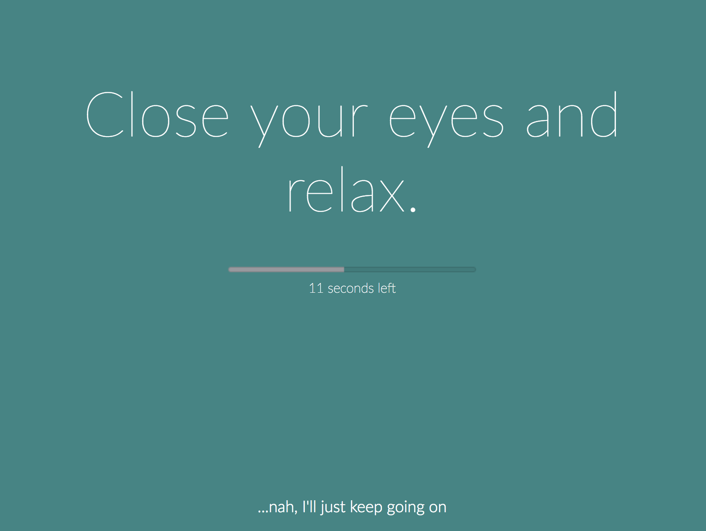

Archive for
2017
Posted under
ruby
rails
docker
vuejs
on
Jul 2 2017
The most of Rails and Docker tutorials either show how to dockerize your existing app, or how to create new Rails app by installing Rails locally and then adding Docker as second step.
It works but it have always struck me as weird idea: why installing...
·
Posted under
ruby
gem
mina
supervisord
mina-supervisord
on
Jun 22 2017
Hi there,
I'm happy to announce the first release of gem mina-supervisord .
Mina::Supervisord is a Supervisor (process control system) wrapper for mina .
Installation
Add this line to your application's Gemfile:
gem 'mina-supervisord', require:...
·
Posted under
stretchly
on
May 18 2017
Hi there guys, I am really happy to release version 0.9.0 of stretchly github .
stretchly is cross-platform open source app that reminds you to take breaks when working with computer.

Added
Tooltip shows information...
·
Posted under
stretchly
on
Apr 27 2017
Hi there guys, I am really happy to release version 0.8.1 of stretchly github .
stretchly is cross-platform open source app that reminds you to take breaks when working with computer.
Fixed
trying to close non-existing...
·
Posted under
stretchly
on
Apr 9 2017
Hi there guys, I am really happy to release version 0.8.0 of stretchly github .
stretchly is cross-platform open source app that reminds you to take breaks when working with computer.
Added
Ctrl/Cmd + x shortcut to finish...
·
·